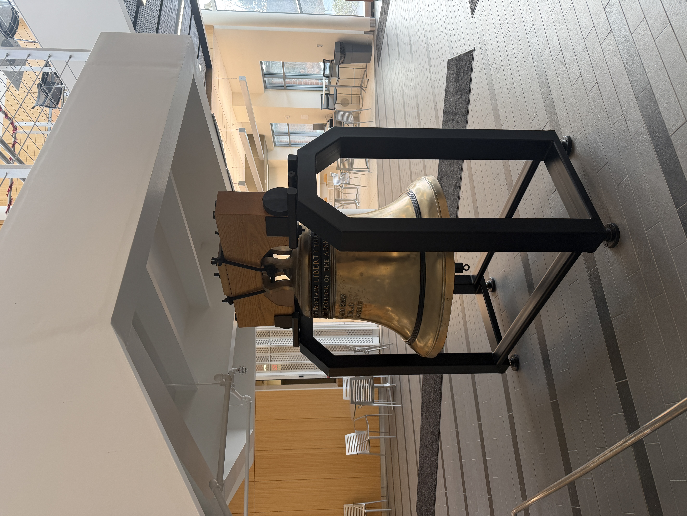

This project involved the 3D scanning and digital visualization of a replica of the Liberty Bell located in Penn State’s Advanced Manufacturing and Innovation Center (AMIC). Using an Artec Eva structured-light scanner, the bell was captured as part of a research collaboration with Jon Young at University Park, supporting ongoing work that explores how a bell’s metal thickness relates to its resonant frequencies.
I assisted directly with the scanning process and was responsible for all post-processing and visualization, including mesh cleanup and rendering in Blender. The primary render illustrates the scanned data in three forms—wireframe geometry, solid mesh, and a fully rendered model—providing a clear comparison between raw scan data and refined output.
This workflow demonstrates how structured-light scanning and careful post-processing can support research, documentation, and analysis by translating physical artifacts into accurate and readable digital models.
LinkedIn Post:

